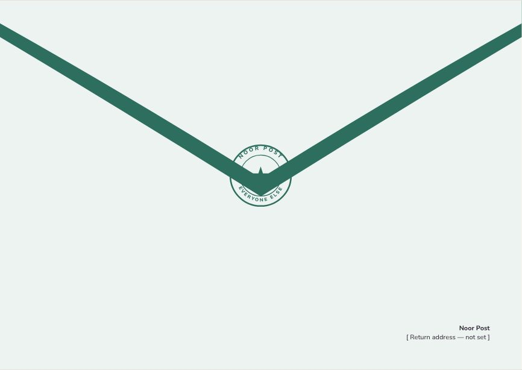
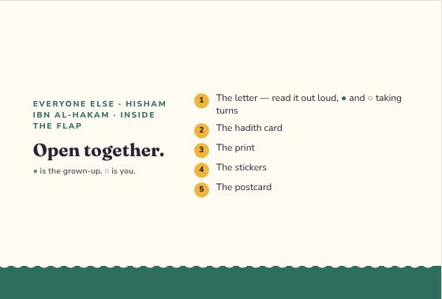
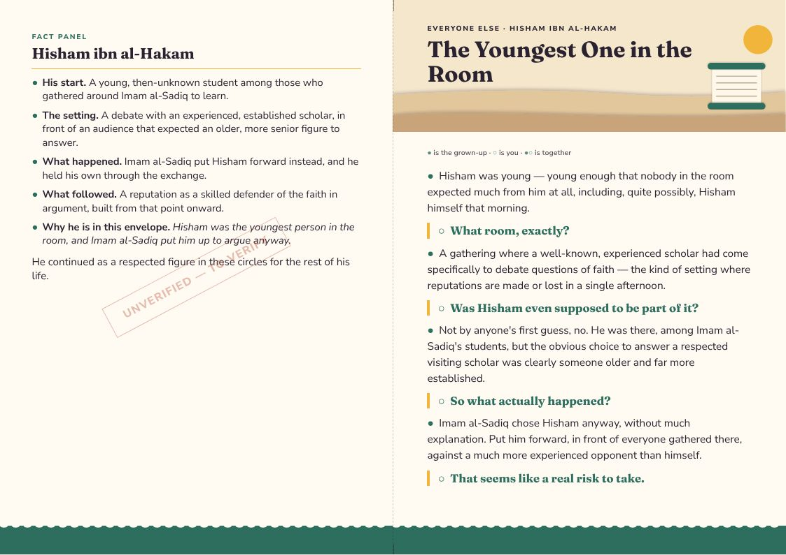
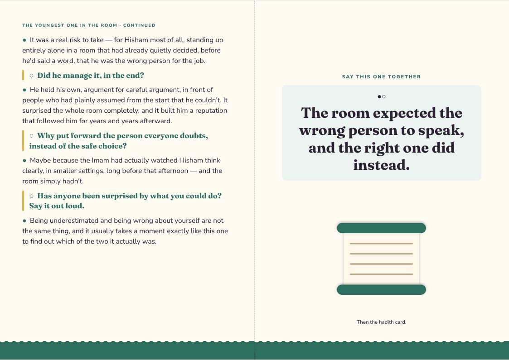
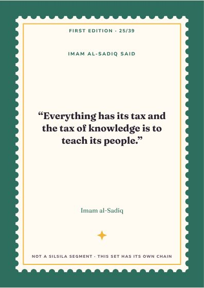
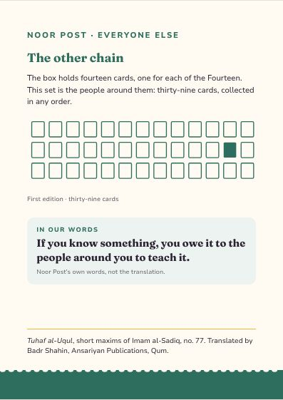
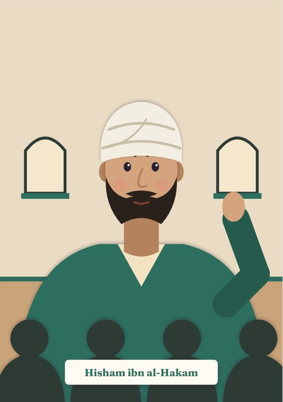
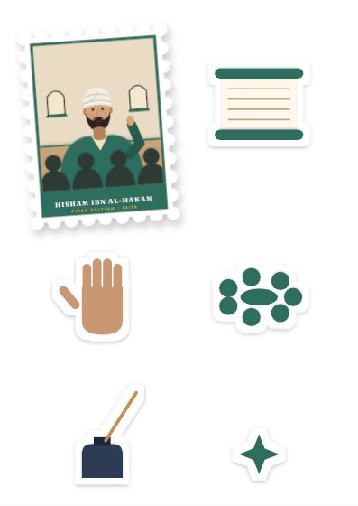
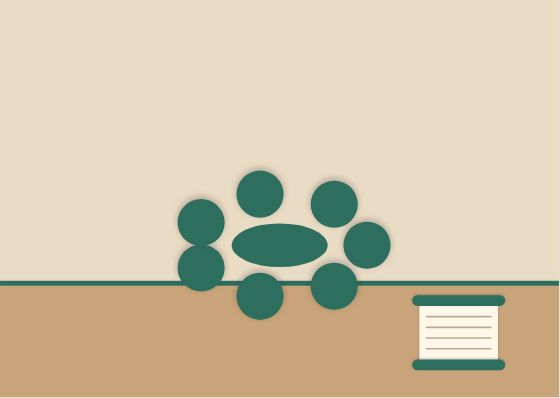

Everyone Else
Hisham ibn al-Hakam
Hisham was the youngest person in the room, and Imam al-Sadiq put him up to argue anyway.
Inside the flap
Open together.
- The letter — read it out loud, ● and ○ taking turns
- The hadith card
- The print
- The stickers
- The postcard
● is the grown-up. ○ is you.
The Youngest One in the Room
● the grown-up · ○ the child · ●○ together
●Hisham was young — young enough that nobody in the room expected much from him at all, including, quite possibly, Hisham himself that morning.
○What room, exactly?
●A gathering where a well-known, experienced scholar had come specifically to debate questions of faith — the kind of setting where reputations are made or lost in a single afternoon.
○Was Hisham even supposed to be part of it?
●Not by anyone's first guess, no. He was there, among Imam al-Sadiq's students, but the obvious choice to answer a respected visiting scholar was clearly someone older and far more established.
○So what actually happened?
●Imam al-Sadiq chose Hisham anyway, without much explanation. Put him forward, in front of everyone gathered there, against a much more experienced opponent than himself.
○That seems like a real risk to take.
●It was a real risk to take — for Hisham most of all, standing up entirely alone in a room that had already quietly decided, before he'd said a word, that he was the wrong person for the job.
○Did he manage it, in the end?
●He held his own, argument for careful argument, in front of people who had plainly assumed from the start that he couldn't. It surprised the whole room completely, and it built him a reputation that followed him for years and years afterward.
○Why put forward the person everyone doubts, instead of the safe choice?
●Maybe because the Imam had actually watched Hisham think clearly, in smaller settings, long before that afternoon — and the room simply hadn't.
○Has anyone been surprised by what you could do? Say it out loud.
●Being underestimated and being wrong about yourself are not the same thing, and it usually takes a moment exactly like this one to find out which of the two it actually was.
●○The room expected the wrong person to speak, and the right one did instead.
Letter, reverse
HISHAM IBN AL-HAKAM
●His start. A young, then-unknown student among those who gathered around Imam al-Sadiq to learn.
●The setting. A debate with an experienced, established scholar, in front of an audience that expected an older, more senior figure to answer.
●What happened. Imam al-Sadiq put Hisham forward instead, and he held his own through the exchange.
●What followed. A reputation as a skilled defender of the faith in argument, built from that point onward.
●Why he is in this envelope. Hisham was the youngest person in the room, and Imam al-Sadiq put him up to argue anyway.
He continued as a respected figure in these circles for the rest of his life.
Hadith card · First Edition 25 / 39
Everything has its tax and the tax of knowledge is to teach its people.
Tuhaf al-Uqul, short maxims of Imam al-Sadiq, no. 77 · trans. Badr Shahin
A saying of Imam al-Sadiq, matched to knowledge, whatever the age of the one holding it.
The design
Everyone Else — one style for the line
Every companion envelope shares one style, so the thirty-nine belong together: each front carries its person as a stamp. Every item at true size → · Print PDF



















The artwork fixes composition, colour and medium for every item; final illustration is still to be commissioned. The fact panel is still to verify.